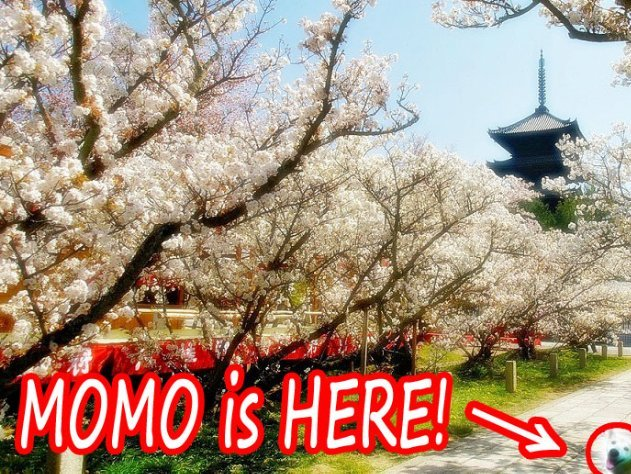
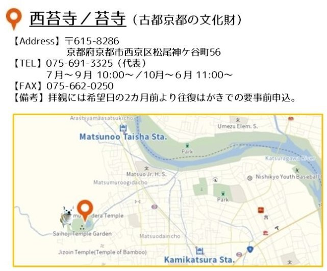
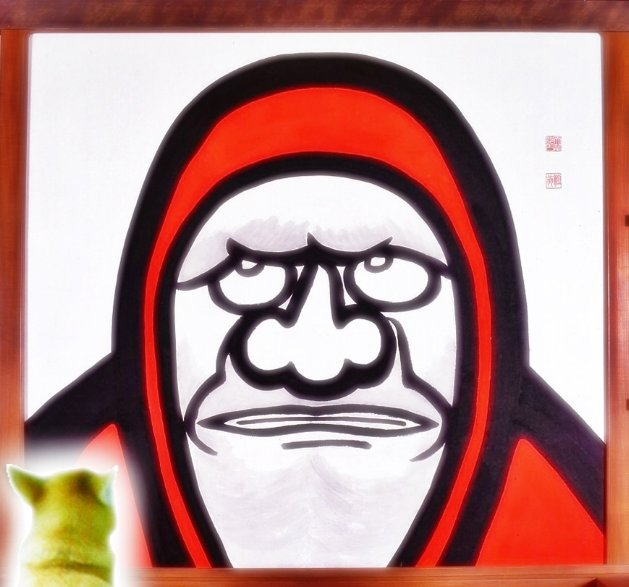
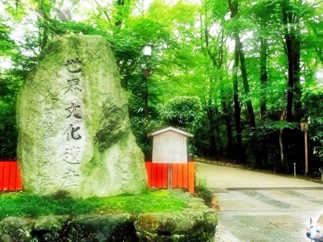
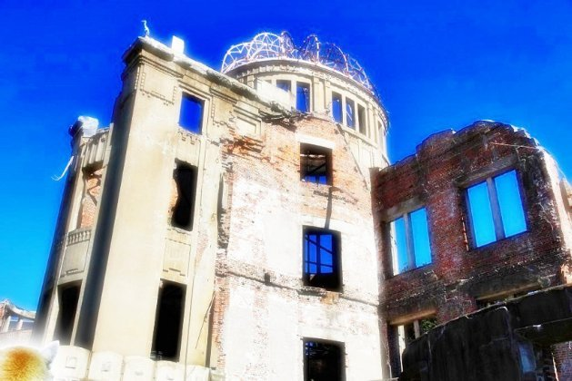

| モモ旅 Vol.2 (The BBB: Breakthrough Bandwagon Books) | |
| モモ | |
| The BBB: Breakthrough Bandwagon Books (2018) | |
Momo 's Journey In Japan Vol.2 (Jp)
（邦題『モモ旅 Vol.2 』）
Written by Momo
Translated by Tanya
Cover design by Tanya
Maps c opyright © 2018 I ncrement P C orporation
C opyright © 2018 Momo / The BBB : Breakthrough Bandwagon Books
All rights reserved.
ISBN: 978-1-387-70433-0
1. 古都京都の文化財 Part 1
ある日、モモは、新幹線で京都を訪れました。
新幹線を降りると、すぐにシナモンの甘い匂いが感じられます。
「わあ！ 八ツ橋 の匂いね！」
前に京都を訪れた時に、モモは八ツ橋の 美味しさにハマったのです。
ところで、ターニャさんによると、京都の世界遺産は、ぜんぶで 17 件あるようです。
まず、 金閣寺として知られる鹿苑寺 （ろくおんじ） を、モモは訪れました。
「あれが金閣寺？ すごい！ ピカピカ！ 」
モモは感動して、その光り輝く建物へ駆け出しました。

モモは、銀閣寺として知られる慈照寺 （じしょうじ） に、やってきました。
「銀」閣寺という名前は有名ですが、実際に は、この建物は 銀色に塗られているわけではないようです。
昨夜は大雪だったので、 両脇を背の高い生垣に挟まれた小道を歩きながら、モモは、ちょっと震えていました。
「本当は銀色のお寺 を見 てみたかったんだけど ......」
小道を抜けると、彼女の視界が劇的に開けました。
「わあ！ とっっっても綺麗！ まさに、『銀』閣寺ね！」
雪に覆われたその寺院は、陽射しにまぶしく照らされて、 白銀の世界となって いたのです。
モモは、京都にふたつある巨大な本願寺のひとつ、西本願寺を訪れています。
敷地の南東角にある「飛雲閣 （ひうんかく） 」という建物を見ることが、今日のモモの目的です。
この建物は、金閣寺と銀閣寺と合わせて、「京の三閣」とされているようなのです。
「わあっ！ これが飛雲閣？」
静かな池に囲まれた その立派 な建物は、 とても堂々としていて、感動しました。
ターニャさんによると、「飛雲」は「雲の上を飛ぶ」という意味で、「閣」は ２ 階以上の建物を示す言葉のようです。
モモは、自分が 建物を操縦して、飛行機のように、空を飛んでいく場面を 想像しました。

ある日、 モモは、二条城 を訪れていました 。
ここは、長い白壁と、お堀に囲まれた場所です。
砂利道を歩くと、おもしろい音がするので、 楽しいです。
とても歴史のある、 堂々とした 建物がいくつもあり、迷路のように巨大なので 、 モモは道に迷って、ある部屋に入り込みました。
「わあっ！ なんて綺麗な部屋なの！」
とても魅力的なので、モモは時間を忘れてしまいそうです。
すると、観光客のひとりがモモを見つけて、彼女を指差しました。
「あら、ねえ、見て！ カワイイ柴犬よ！ でも、 飼い主さんは、どこ ？」
期せずして、モモは、たくさんの注目を集めてしまいました。
ある日、モモは、京都府宇治市の 平等院を訪れていました。
もう陽が暮れた後でしたが、 境内に入ることができ ました。
『 鳳凰堂 』 という名前のメインの建物が、ライトアップされています。
その立派な姿が、建物 正面の湖に反射しています。
「とっっっても綺麗！ わたし、この建物、知ってる！」
モモは、持っていた比較的新しい 10 円硬貨を取り出しました。
その硬貨 の表面には、彼女の目の前の建物が刻まれています。
硬貨も光を反射しているので、モモの 小さな肉球の上に載った 10 円玉も 、目の前の本物同様に輝いていました。
平等院を訪れた翌日、モモは宇治川沿いを散歩していました。
観光客が行ったり来たり する中、絵描きさんや写真家さんたちが、周辺の美しい景色を題材にしているらしい 彼らの仕事に集中しています。
モモは、芸術家肌の女性に話しかけられました。
「あら、かわいいワンちゃん！ わたしの木版画のモデルになってくれる？」
彼女は木版画家さんのようで、ラフ画を描いている最中のようです。
その作品に、モモを加えてくれる、とのことです。
------わあ！ 素敵！
2. 古都京都の文化財 Part 2
ある日、モモは、京都の桜の名所として有名な 、とても人気のある醍醐寺を訪れていました。
桜の色、ピンク色に景色が染まっています。
日本語で、ピンクは「モモ」と言われます。
だから、モモは、彼女と同じ名前のその色が大好きです。
「とっても綺麗で幻想的！ モモ色の お 花がこんなに素敵なんて、幸せ」
そのピンク色の楽園の中で、モモは雲の上にいるような心地でした。
ある日、モモは、京都北西の山深いところにある高山寺 （こうざんじ） を訪れていました。
この寺院は、最古の漫画とされる、とても有名な「鳥獣人物戯画 （ちょうじゅうじんぶつぎが） 」を所蔵していることで有名なようです。
モモは、以前、ターニャさんが見せてくれた戯画のひとつを思い出しました。
その画の中では多くの動物が楽しそうに遊んでいて、モモは、そこに加わりたくなりました。
「この戯画の中で、彼らと遊べたら良いのに......」
それは、素敵な夢のように、とても魅力的な思いつきでした。
ある日、モモは ３ 年ぶりに龍安寺 （りょうあんじ） を訪れていました。
前の 訪問の時、モモは、その美しい庭に侵入して、お坊さんに叱られたのです 。
「あの庭に足跡を残しちゃダメ だってコト、わたし、ちゃんと 知ってるんだから」
そこに着いた時、モモは庭のそばの桜の木が満開なのに気づきました。
「わあっ！ モモ色のお花、大好き！」
モモは、興奮して、気がつくと、その木のほうへ走り出していました。
「しまった！ うっかり......。ごめんなさい......」
不注意にも、モモは美しい庭園の砂利を乱してしまいました。
ふり返ると、あのお坊さんが歩いてきます。
------ また 怒られちゃう......
ある日、モモは京都西部の仁和寺（にんなじ）を訪れていました。
御室桜（おむろざくら）と呼ばれるこの寺院の桜は、京都のほかの場所より遅くに満開となるようなのです。
敷地に入ると、美しいモモ色の お 花の並びに、モモは迎えられました。
比較的背は低い木々ですが、誇らしげに、優雅に立っています。
「わたしたち、どちらも小さいから、わたし、このお花が大好き！」
モモは自然と満面の笑みになったのでした。

ある日、モモは、京都西部にある西芳寺 （さいほうじ） を訪れていました。
このお寺に入るにはハガキによる事前予約が必要なので、モモは、ターニャさんにお願いして、ハガキを送っておいてもらったのです。
境内に通されると、視界いっぱいに、綺麗なモスグリーンが広がりました。
新鮮な匂いを感じ取って、モモは地面に鼻を近づけます。
「これって、苔よね？ わたし、この匂い、大好き！」
あとで聞いたところによると、このお寺は「苔寺 （こけでら） 」という名前でも知られているようです。
この素敵な庭園がとても広いので、モモは、かくれんぼをしたい衝動にかられました。
------ 最初は、どこに隠れよう？


ある日、モモは、京都のとても有名な観光名所・嵐山の中心エリアにある天龍寺を訪れていました。
とても便利なことに、嵐山でいちばん有名なランドマークの渡月橋 （とげつきょう） とは目と鼻の先です。
「天龍」という名前は、「お空にいるドラゴンさんたち」という意味のようです。
ドラゴンさんたちが お 空を飛ぶ様子を想像しながら、モモは敷地内の建物のひとつに入りました。
すると、とっても巨大な、恐ろしい 顔が、モモをにらみつけています。
「きゃー、怖いっ！ この人、だれなの？」
最初は恐ろしかったのですが、それがただの絵であることに、モモは、すぐ気がつきました。
ひとりのお坊さんがモモのほうへ歩いてきて、言いました。
「この人は、達磨大師（だるまだいし）さん。禅の教えを始めた、すごいお坊さんだよ」
説明を聴きながら、モモは、その絵を注意深く見つめました。
------ ダルマさん、なにを見てるんですか？
もしかしたら、お空を飛ぶドラゴンさんたちかもしれない、と、モモは思いました。
3 . 古都京都の文化財 Part 3
ある日、モモは、京都と滋賀の県境にある比叡山の延暦寺 （えんりゃくじ） を訪れていました。
とても高い山なので、頂上に着く 前に、あたりは暗くなり始めました。
いざ到着 すると、たくさんのロウソクが、その寺院を幻想的に照らしています 。
「わあっ！ なんて幻想的な景色！」
山奥深くに、このような素晴らしい施設があることに、モモは感動しました。
夜の闇を照らす灯火が優しく感じられて、不思議でした。
ある日、モモは、京都の観光名所の中で、もっとも有名で、もっとも人気のある場所のひとつ、清水寺を訪れていました。
お寺の名前「キヨミズ」は、「清らかな水」という意味だそうです。
綺麗なお水を味わうのを楽しみにしていたのですが、「清水の舞台」と呼ばれる場所は、とても高いところにあって、モモは、からだが震えるのを止められませんでした。
「高くて怖い！ でも......、この景色、信じられないくらい素敵！」
京都市のパノラマを見渡して いると、モモは、お坊さんに話しかけられました。
「やあ、かわいい柴犬ちゃん。こっちに来て、力試しをしてみないかい？」
そこには、輪っかのついた杖が２本（長いものと短いもの）と下駄があり、すべて鉄でできているようでした。
お坊さんによると、それを持ち上げてみることで、力試しできるそうです。
「うーーーん......。わたしには、ちょっと重すぎ る かな？」
ある日、モモは、京都駅の 近く にある東寺を訪れていました。
その五重塔は京都駅からハッキリ見えるので、実は、以前から興味を持っていたのです。
ターニャさんの勧めで、陽が暮れてから訪れてみました。
夕暮れの中で到着した時、思わず息を飲む神々しい景色に、モモは驚かされました。
「わあ！ 黄金のタワーみたい！」
まぶしく照らされるその塔の明るさに、モモは、すっかり魅了されてしまいます。
「天国にいるみたい！ 本当に素敵！」
モモは、その黄金のはしごを自分が天国まで駆け上がるところを想像しました。



ある日、モモは、京都某所で、みたらし団子を美味しくいただいていました。
「うーん......ほんと、マンプク。ダイエットのために、ちょっと歩かなくちゃ」
おなかいっぱいで、ぼーっとしていたせいか、モモは、原始的な林の奥深くまで迷い込んでしまいました。
「あら......どうしよう。どっちに進めばいいの？」
その時、どこかで、だれかの声が「モモ！ こっちだよ！」と何度か言うのが聞こえました。
指図される通りに歩いて、モモは、ついに下鴨 （しもがも） 神社に辿り着きました。
------ だれの声だったのかしら？
空を見上げて、モモは、３本足の不思議な鳥 さん が飛び立つのを目撃しました。
ある日、モモは、京都市北部の 上賀茂 （かみがも） 神社を訪れていました。
美しい白の、幅広の砂利道が、神社までまっすぐに延びています。
それを通り抜けると、敷地内に、ふたつの円錐形の砂山を見つけました。
「わあっ！ あれ、なあに？ あそこに飛び込んでみたい！」
ですが、その時、どこからともなく白いお馬さんが現れて、モモを止めました。
「おっと、ワンちゃん。あれに飛び込んじゃダメだよ。立砂は聖なる砂山なんだから。その代わり、 あそこにある、茅（かや）でつくった神聖な茅の輪（ちのわ）を、くぐってごらん」
「へえ、おもしろそう！ どうすればいいの？」
「８の字を描くように、合計４回、くぐるんだよ。やってみたら？」
謎のお馬さんに勧められるままに、モモは茅の輪まで歩き、それを心配そうに見上げました。
「うーん......どうすれば、８の字を描けるのかな？」
モモの頭の中で思考が複雑に絡み合って、 目がグルグル、頭もグルグル......。
「モモちゃん、大丈夫？」
モモは思わず、地べたに座り込んでしまいました。
4. 白川郷・五箇山の合掌造り集落
京都での旅を終えたモモは、岐阜県の白川郷に、やって来ました。
数年前にここへ来た時には 大雪だったことを、よくおぼえています。
雪のため、前回 は残念ながら、この村をよく見て周 れなかったのです。
でも、今回は、とても好いお天気に恵まれました。
「わあっ！ かわいいおウチばかり！ 綺麗な絵みたいだわ」
田んぼや木々の緑がとても生き生きとしていて、モモを魅了します。
モモは、何度も深呼吸をしました。
新鮮な空気が、彼女に、たくさんのエナジーをくれるように感じられます。
モモは上きげんで、スキップして村を周り始めたのでした。
菅沼集落を訪れるために、モモは岐阜県から富山県へ移動しました。
この集落 も、 白川郷と一緒に 世界遺産 に登録されたのだそうです 。
家は九棟だけですが、視界には美しい田んぼが広がっています。
陽が暮れたあと、家々はライトアップされて、ファンタジー 小説のよう です。
「まるで魔法の国に来たみたい」
モモが想像した架空のお話のタイトルは、『不思議の国のモモ』------でした。
ある日、モモは、富山県南砺市 （なんとし） の相倉 （あいのくら） 集落を訪れていました。
菅沼集落から相倉集落までは、車で 15 分くらいです。
こ ちらの集落も、 白川郷と一緒に世界遺産になったと聞きました。
ここには 23 棟の家々があり、どれも 、 かわいらしいです。
「やあ、かわいいワンちゃん。ちょっとウチに寄って くかい？」
親切な村人さんたちが、彼らのおウチにモモを招待してくれました。
囲炉裏があるせいで、家の中は、とても暖かくて快適です。
気持ちが良くなってきて、モモは、座布団の上で居眠りしてしまいました。
5. 厳島神社
富山県の相倉集落を去ったあと、 モモは電車を乗り継いで、３年ぶりに広島県にやって来ました。
前回の訪問では、お友だちになった鹿さんと写真を撮ったことを、おぼえています。
引き潮の時だったので、巨大な鳥居まで、モモは干潟を歩けました。
「鹿さん！ どこにいるのかな？」
あたりを見回すと、ひとりの観光客が、モモの肩を叩きました。
モモが示された方角を見ると、鹿さんが、こちらへ走って来るところでした。
「 モモちゃん、 お久しぶり！」
厳島神社の木の廊下を歩きながら、モモは夕陽 の強い陽射しに照らされました。
気がつくと、 モモの影は、巨大の犬のそれのように、信じられないほど長くなっています。
「わあっ！ 水の表面が金色に輝いてる。とっても素敵 ！」
建物は、広島湾の巨大な真紅の鳥居に面しています。
午後の陽射しのオレンジの光の中で、鳥居は 堂々と した雄姿で聳（そび）えて います。
絵のような風景に魅了 されているうちに、目が痛くなってしまいました 。
サングラスを持ってくれば良かった、と、モモは思いました。
鹿さんにオススメされて、モモは、弥山（みせん）の頂上にある展望台 に行くために宮島ロープウェイに乗りました。
ロープウェイ は、予想していたより速いスピードで 空中に上昇していきます。
モモは、高所恐怖症なので、からだの震えを 止められませんでした。
でも、 彼女のとなりにいた年配の女性が、彼女の頭を撫（な）で 、背中を叩いてくれました。
「かわいいワンちゃん。外を見てみたら？」
怖かったですが、モモは、顔を窓ガラスに近づけました。
「 わあっ！ 絵のような景色！ あの厳島神社が、とっても小さく見える！」
広島湾の美しい景色が 、水平線まで広がっていました。
ある日、モモは、広島の地御前神社に、やって来ました。
地元の人たちが、その神社が厳島神社の外宮 （げくう） だと教えてくれたのです。
地御前神社は２本の線路に挟まれていて、舗装された道路が、主殿 （しゅでん） と鳥居のあいだを走っています。
こ れって、とても珍しい配置なのでは？ と、モモは思いました。
「あ、ねえ！ こんにちは、狛犬さん！」
狛犬さんの石像に話しかけていた時、モモは、踏切が鳴る音を聞きました。
狛犬さんが見ている方角を、電車が走り抜けていきます。
モモも、狛犬さんと同じ姿勢になって、それを見つめました。
なんだか、狛犬さんの相棒になれたようで、嬉しい気持ちになりました。
ある日、モモは、厳島神社の近所を歩き回っていました。
神社の近くの坂を下っていると、石壁と門がありました。
通りがかった人の話では、それは、江戸時代に建てられた林家住宅だそうです。
林 さんは、厳島神社の神主さんの家系なのだそうです。
「自分のおウチが世界遺産だなんて......素敵！」
モモのおウチが世界遺産になるのには、何世紀かかるのでしょうか。
6. 原爆ドーム

今日が特別な日であることを、モモは知って います。
だから、彼女は、路面電車で、広島市の中心エリアに、やって来ました。
彼女の目的は、原爆ドームを訪れることです。
1945 年 ８ 月 ６ 日以降、この建物は原爆の悲劇の象徴であり続けてきました。
そして、 1945 年８月９日には、 もうひとつの原爆が 、 ターニャさんの故郷である長崎に落とされた のです。
世界平和への祈りを込めて、モモは肉球を そっと 合わせました。
原爆ドームで世界平和を祈ったあと、モモは、広島平和記念公園へ移動しました。
公園のあちこちに、色とりどりの折り鶴が飾られています。
折り鶴のつくり方は、以前、ターニャさんに教わりました。
モモはピンクの折り紙を用意して、それを折り始めました。
「近いうちに、世界平和が実現しますように......」
祈りを込めて、モモは、折ったばかりの鶴を、そこに並べました。
折り鶴を並べた時、モモは、印象的な銅像が静かに佇んでいるのに気づきました。
近づくと、ボランティア・ガイドらしき年配の女性から話 し かけられました。
「かわいいワンちゃん、知ってる？ これは『原爆の子の像』よ」
それは、原爆の影響による白血病のため、 12 歳で亡くなった佐々木禎子 （ささき・さだこ） さんの像なのだそうです。
病気と闘いながら、禎子さんは折り鶴をつくりながら快復を祈っていたそうです。
モモは、ピンクの折り紙をもう 1 枚とり、今度は禎子さんのために折り鶴をつくり始めました。

禎子さんの像 を見てとても悲しくなった モモは、 原爆ドームの近くまで歩み寄りました。
この建物は原爆であまりにも破壊されたので、最初は取り壊される予定だったそうです。
でも、たくさんの人が、世界平和を祈るための モニュメントとして遺すべきだと主張しました。
そして、 1966 年に、永遠に保存することが決められました。
世界遺産に登録されたのは、 その 30 年後。 時を経て、 多くの国からやって来た人たちが、真剣な表情で、この建物を見上げています。
世界平和への人々の真摯 （しんし） な祈りに、モモは 心を揺さぶられました。
（モモの次なる冒険に 続く）
本書は The BBB: Breakthrough Bandwagon Books のためにつくられたオリジナル作品です。